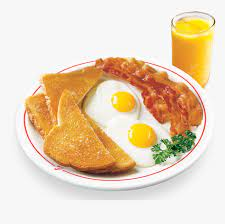

Eggs with bacon and orange juice

"Best breakfast ever"
I would like to share with you the best breakfast
in the whole world, I have been eating it for years
and I never get tired of it. They are delicious
eggs with fried bacon; I will give you my most
secret secrets of how to prepare them.
“Ingredients”
- Eggs
- Bacon
- Bread
- Orange juice
- Salt
“Steps”
- Smile like a great artist about to perform
- Put your ingrediants aside
- Use a regular pan and put it on the stove,
fry bacon in a pan on medium-low flame until they are crispy.
Transfer them into a plate.
- Use the same pan to cook eggs. Crack eggs in the pan and cook
them as you like; sunny side up. Cover the pan so that the egg
cooks properly.
- Add salt to the eggs
- Serve your favorite juice in your favorite glass
- Now the final touch, put two bread slices in the microwave for 30 seconds
and put them on the plate too.